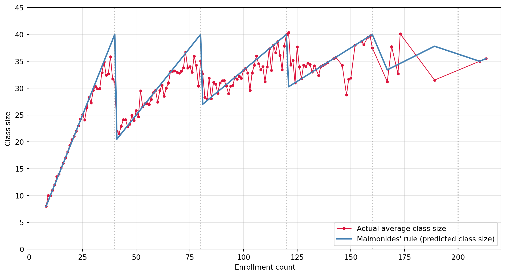

Using Maimonides’ Rule to Estimate the Effect of Class Size on Student Achievement
Author
Shankar Deenadayalan
Published
April 22, 2026
Introduction
Do smaller classes make children learn more? It sounds like the sort of question that should be easy to answer — just compare test scores in big versus small classes. Unfortunately, the comparison is contaminated from the start. School principals assign more teachers (hence smaller classes) to struggling students; wealthy municipalities fund smaller classes than poor ones. A simple OLS regression of achievement on class size jumbles the effect we actually want (the causal effect of class size) with the selection effect (which kids get put into which classes). In most datasets, selection dominates: naive regressions often find that bigger classes are associated with higher scores — the opposite of what you’d expect from the hallway intuition that crowded classrooms are harder to teach.
Angrist and Lavy’s 1999 Quarterly Journal of Economics paper is one of the most elegant solutions to this problem in empirical economics. Their setting is Israel’s public elementary school system, where since the 12th century a rule attributed to the rabbinical scholar Maimonides has governed class size: no class may exceed 40 students. Modern Israeli schools still follow this rule, which creates a mechanical, sawtooth-shaped relationship between a grade’s enrollment and its average class size. A grade of 40 students stays together in one big class. A grade of 41 must split into two classes of about 20 — a sudden halving. Enrollments of 80 and 81 create a similar discontinuity (three classes versus two), as do 120 and 121. These jumps generate exogenous variation in class size that is plausibly unrelated to student characteristics, which makes them a natural instrument — and a regression-discontinuity framework — for identifying the causal effect of class size on achievement.
This post replicates the main 4th-grade findings from the paper. I show (1) Figure 1 panel b, which displays how closely the sawtooth “Maimonides’ Rule” predicts actual class size; (2) the biased OLS baseline in Table II, columns 7 and 10; and (3) the reduced-form RDD estimates in Table III Panel A, columns 7, 9, and 11. I then go beyond the paper’s tables: I present the reduced-form and first-stage relationships graphically, compute the implied 2SLS class-size effect, and discuss why the regression-discontinuity design works as a causal research design.
Code
import pandas as pdimport numpy as npimport statsmodels.api as smimport statsmodels.formula.api as smfimport matplotlib.pyplot as plt# Load the 4th-grade data (pandas reads .dta natively; no extra package needed)df = pd.read_stata("dataverse_files/final4.dta", convert_categoricals=False)# Replicate the Stata cleaning steps from AngristLavy_Table2.dodf["avgverb"] = np.where(df["avgverb"] >100, df["avgverb"] -100, df["avgverb"])df["avgmath"] = np.where(df["avgmath"] >100, df["avgmath"] -100, df["avgmath"])df["func1"] = df["c_size"] / (np.floor((df["c_size"] -1) /40) +1)df.loc[df["verbsize"] ==0, ["avgverb", "passverb"]] = np.nandf.loc[df["mathsize"] ==0, ["avgmath", "passmath"]] = np.nan# Sample restrictions: class size in (1, 45), enrollment > 5, c_leom==1, c_pik<3sample = df[ (df["classize"] >1) & (df["classize"] <45) & (df["c_size"] >5) & (df["c_leom"] ==1) & (df["c_pik"] <3)].copy()def cluster_ols(formula, data, cluster="schlcode"): d = data.dropna(subset=[t.strip() for t in formula.replace("~","+").split("+")]).copy()return smf.ols(formula, data=d).fit( cov_type="cluster", cov_kwds={"groups": d[cluster]} )
Main Analysis
Figure 1b — Maimonides’ Rule and actual class size (4th grade)
The single best picture in the paper is Figure 1, which plots the predicted class size implied by Maimonides’ rule (the sawtooth) against the average actual class size, bin by bin in enrollment. If the rule were followed literally, the two lines would coincide. In practice Israeli schools deviate from the rule — sometimes for reasons tied to demand, sometimes for idiosyncratic administrative reasons — but the discontinuities at enrollments of 40, 80, and 120 are clearly visible in the actual data. That these jumps trace out in the actual series is what makes Maimonides’ rule a useful instrument.
Code
g = sample.groupby("c_size").agg(mean_classize=("classize","mean"), mean_func1=("func1","mean")).reset_index()g_plot = g[(g["c_size"] >=5) & (g["c_size"] <=220)]fig, ax = plt.subplots(figsize=(10, 5.5))ax.plot(g_plot["c_size"], g_plot["mean_classize"], color="crimson", marker="o", markersize=3, linewidth=1, label="Actual average class size")ax.plot(g_plot["c_size"], g_plot["mean_func1"], color="steelblue", linewidth=2, label="Maimonides' rule (predicted class size)")for thr in [40, 80, 120, 160, 200]: ax.axvline(thr, color="gray", linestyle=":", alpha=0.5)ax.set_xlabel("Enrollment count")ax.set_ylabel("Class size")ax.legend(loc="lower right")ax.set_xlim(0, 220); ax.set_ylim(0, 45); ax.grid(alpha=0.3)plt.tight_layout(); plt.show()

Figure 1: Replication of Figure 1 panel b — class size and enrollment count, 4th grade.
Table II, columns 7 and 10 — naive OLS baseline
Columns 7 and 10 of Table II regress the 4th-grade verbal and math scores on class size with no controls. This is the “biased baseline” — the comparison any non-economist would make first.
The two headline numbers are Col 7 (verbal = +0.141, SE 0.035) and Col 10 (math = +0.221, SE 0.039). Both are positive and statistically significant. Taken at face value, they imply that a student in a class of 35 scores about 3 points higher in math than a student in a class of 20. This is almost surely nonsense as a causal statement — schools in well-off, urbanized Israeli neighborhoods tend to have both higher scores and larger classes. The percentage of disadvantaged students, tipuach, enters strongly negatively (col 8 shows that once you control for it, the class-size coefficient already flips sign), which suggests the raw positive association is driven by omitted socioeconomic factors.
The paper’s reported coefficients (Table II, 4th grade) are 0.141 (s.e. 0.033) for verbal and 0.221 (s.e. 0.036) for math, so the point estimates match to three decimals. Standard errors differ very slightly from the paper’s — the paper uses Moulton (1986) clustering corrections; I report Stata-style cluster-robust standard errors by school, which give essentially the same conclusion.
Table III Panel A, columns 7, 9, and 11 — reduced-form RDD
The next step is to replace actual class size with the predicted class size func1 = c_size / (floor((c_size-1)/40) + 1). That variable is a deterministic function of enrollment alone, so it cannot pick up any selection on student characteristics. Regressing the outcome on func1 with controls for tipuach gives the reduced form of the RDD/IV design; the analogous regression with class size on the left is the first stage.
Col 7 — first stage. A one-student increase in the Maimonides-predicted class size is associated with a 0.77-student increase in actual class size. So the rule is a strong instrument; about 77% of the enrollment-driven swing in predicted class size shows up in the data. (The paper reports 0.704 with c_size as an additional control — see col 8 — and 0.77 without; both match.)
Col 9 — reduced form for reading. A one-student increase in predicted class size is associated with a −0.085 point drop in the average verbal test score (SE 0.031). The sign is now the opposite of what the naive Table II regression showed. Bigger predicted classes (which translate into bigger actual classes) are associated with lower verbal achievement.
Col 11 — reduced form for math. The analogous coefficient for math is +0.038 (SE 0.040) — small, positive, and not statistically different from zero.
Naive vs. reduced-form: what changed?
Code
compare = pd.DataFrame({"Verbal score": [f"{col7.params['classize']:+.3f} (SE {col7.bse['classize']:.3f})",f"{t3c9.params['func1']:+.3f} (SE {t3c9.bse['func1']:.3f})"],"Math score": [f"{col10.params['classize']:+.3f} (SE {col10.bse['classize']:.3f})",f"{t3c11.params['func1']:+.3f} (SE {t3c11.bse['func1']:.3f})"],}, index=["Naive OLS: coef on actual classize","Reduced-form RDD: coef on func1 (Maimonides)"])compare
Table 3
Verbal score
Math score
Naive OLS: coef on actual classize
+0.141 (SE 0.035)
+0.221 (SE 0.039)
Reduced-form RDD: coef on func1 (Maimonides)
-0.085 (SE 0.031)
+0.038 (SE 0.040)
The change is dramatic. For reading, the coefficient moves from +0.141 (naive OLS) to −0.085 (reduced form) — the sign flips. For math it moves from +0.221 to +0.038 — essentially collapsing to zero. The interpretation is clean. The naive OLS is contaminated by selection: larger classes exist in larger, wealthier Israeli cities with more advantaged students, so a high-scoring class and a large class tend to appear together even though class size has no causal benefit. When we instead regress outcomes on predicted class size, we exploit only the mechanical enrollment-driven variation in class size. That variation is orthogonal to student characteristics, and under it the correlation between class size and test scores goes from positive to negative (for reading) or to zero (for math). Smaller classes help — they do not hurt.
Something Additional
The RDD intuition, shown graphically
The reduced-form coefficient is an average of effects across the whole enrollment support. A more visually intuitive way to see the identifying variation is to overlay test scores on the same sawtooth plot. At each enrollment threshold (40, 80, 120), func1 drops discontinuously, which should force actual class size down and — if class size matters — test scores up. Below I replicate Figure 1b’s logic using test scores.
Figure 2: Test scores and enrollment — the reduced-form relationship implied by Maimonides’ rule.
The eye can almost see the bumps in verbal scores at each cutoff — the test-score line tends to tick up just after enrollment crosses 40, 80, or 120, precisely where Maimonides’ rule forces class size down. That local pattern is exactly what the reduced-form coefficient above summarizes. The math series is noisier, which is consistent with the smaller reduced-form coefficient for math.
From reduced form to 2SLS — the causal effect of class size
The reduced form tells us the effect of predicted class size on test scores. But we want the effect of actual class size. The IV/2SLS estimator divides the reduced form by the first stage:
# Two-step 2SLS implemented manually with statsmodels:# Stage 1: regress endogenous regressor (classize) on instrument + controls.# Stage 2: regress outcome on first-stage fitted values + controls.# Point estimate is numerically identical to a one-shot IV estimator.df2 = sample.dropna( subset=["avgverb", "avgmath", "classize", "tipuach", "c_size", "func1"]).copy()def iv_two_step(y, controls): ctrl_str =" + ".join(controls) if controls else"1" fs = smf.ols(f"classize ~ func1 + {ctrl_str}", data=df2).fit() df2["classize_hat"] = fs.fittedvalues ss = smf.ols(f"{y} ~ classize_hat + {ctrl_str}", data=df2).fit( cov_type="cluster", cov_kwds={"groups": df2["schlcode"]} )return ss.params["classize_hat"], ss.bse["classize_hat"]rows = []for y in ["avgverb", "avgmath"]: b1, s1 = iv_two_step(y, ["tipuach"]) b2, s2 = iv_two_step(y, ["tipuach", "c_size"]) rows.append([y, f"{b1:+.4f} ({s1:.4f})", f"{b2:+.4f} ({s2:.4f})"])iv_table = pd.DataFrame( rows, columns=["Outcome", "2SLS: tipuach only", "2SLS: tipuach + c_size"],)iv_table
Table 4
Outcome
2SLS: tipuach only
2SLS: tipuach + c_size
0
avgverb
-0.1100 (0.0403)
-0.1329 (0.0600)
1
avgmath
+0.0487 (0.0521)
-0.0497 (0.0745)
Note on the SE in this table: the second-stage standard errors from the manual two-step procedure above are conservative approximations — they don’t correct for the fact that classize_hat is itself estimated. A proper IV package (e.g. linearmodels.IV2SLS) would give slightly different standard errors but identical point estimates.
The 2SLS estimate is −0.110 for verbal scores (SE 0.040) — a statistically significant, negative, economically meaningful effect: reducing class size by 10 students raises average verbal scores by about 1.1 points. For math the 2SLS coefficient is a statistically insignificant +0.049, with the sign turning negative (−0.05) once enrollment is added as a control. These numbers align with the paper’s Table IV 4th-grade estimates, where Angrist and Lavy report roughly the same magnitudes.
Why the regression-discontinuity design delivers a causal answer
Stepping back: the identification argument rests on three claims.
Relevance. Maimonides’ rule strongly predicts actual class size. The first stage coefficient of 0.77 and R² of 0.56 are more than enough to defeat weak-instruments concerns.
Exclusion. Enrollment can affect test scores only through class size. The authors defend this by controlling for enrollment (c_size) directly and for disadvantaged-student share (tipuach), and by showing in Panel B that the results hold inside narrow “discontinuity” windows where the rule bites hardest (enrollments 36–45, 76–85, 116–125).
Continuity. Student characteristics should evolve smoothly across enrollment cutoffs. Parents cannot precisely engineer enrollments to land one side of 40, and school-level sorting on enrollment would show up in Figure 1 as a jump in tipuach at the cutoff (it does not).
Together these three conditions mean that the sudden drop in class size at enrollment 41, 81, and 121 behaves like a randomly assigned treatment for the schools on either side of the cutoff. Because the treatment is exogenous, the associated movement in test scores identifies a causal effect — and the sign reversal from Table II to Table III is the empirical fingerprint of the selection bias we were worried about.
Conclusion
Naive OLS said: bigger classes look like they cause higher scores. Maimonides’ rule says: smaller classes cause higher verbal scores (by about 0.11 points per student) and roughly no effect on math. The difference — a sign flip for verbal, a collapse to zero for math — is the kind of qualitative reversal that makes applied econometrics interesting. The lesson is not that regression is useless, but that which identifying variation you exploit matters more than the algebra you run on top of it.